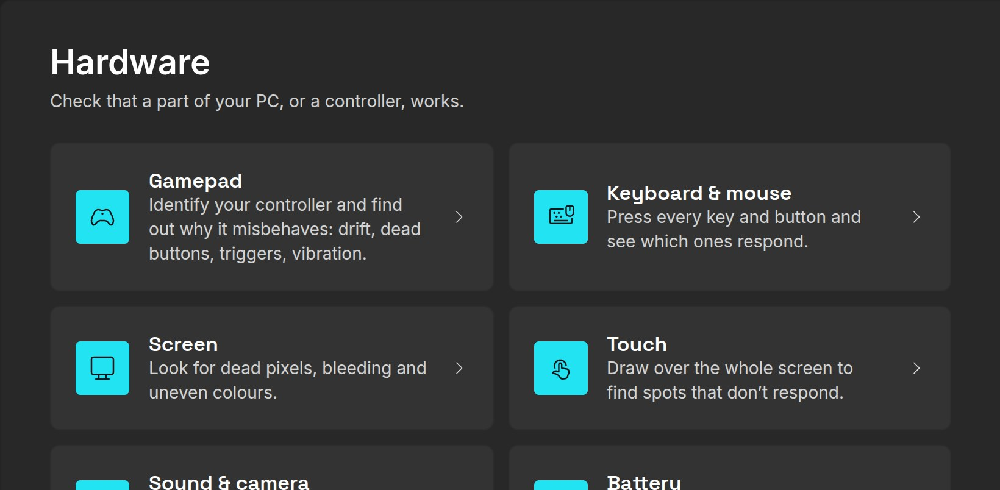
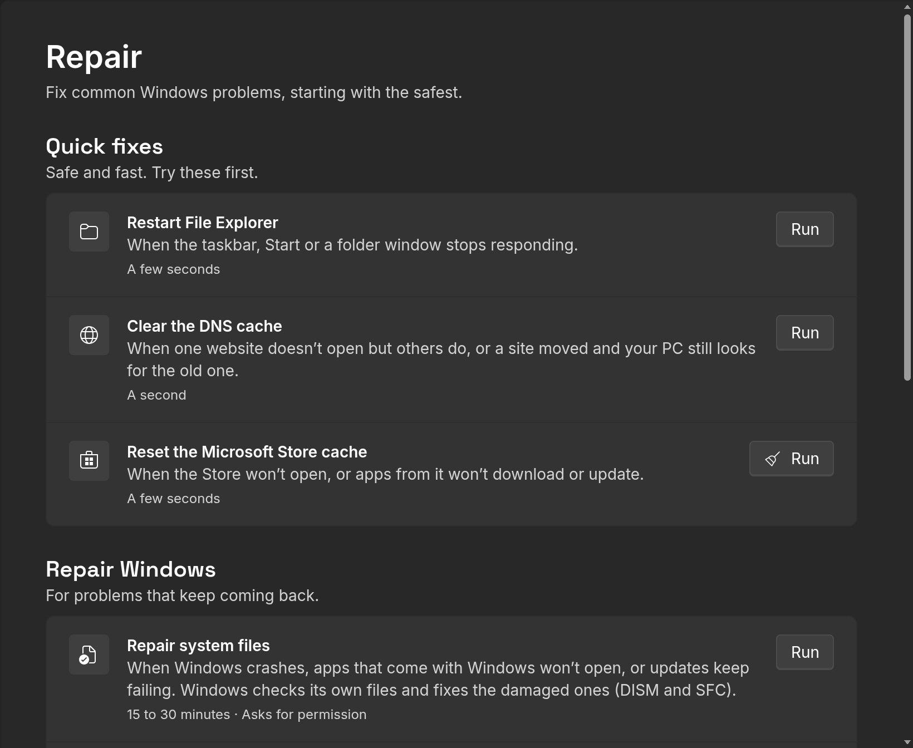
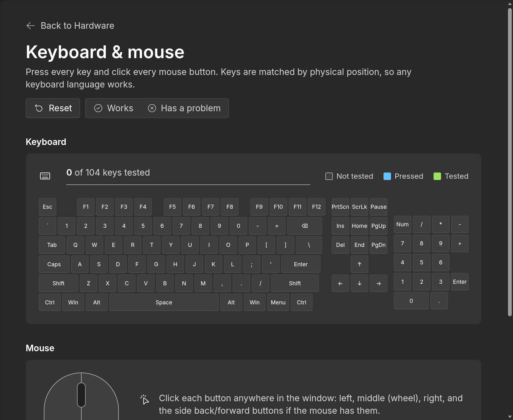
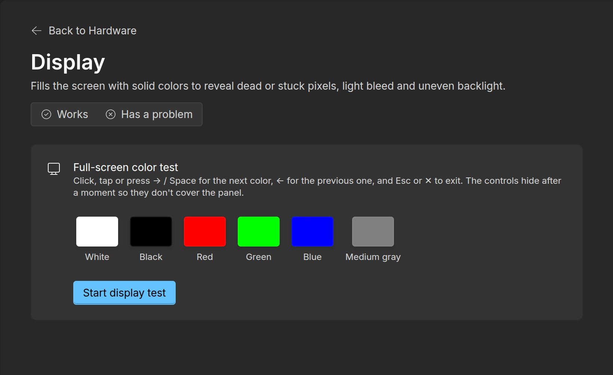
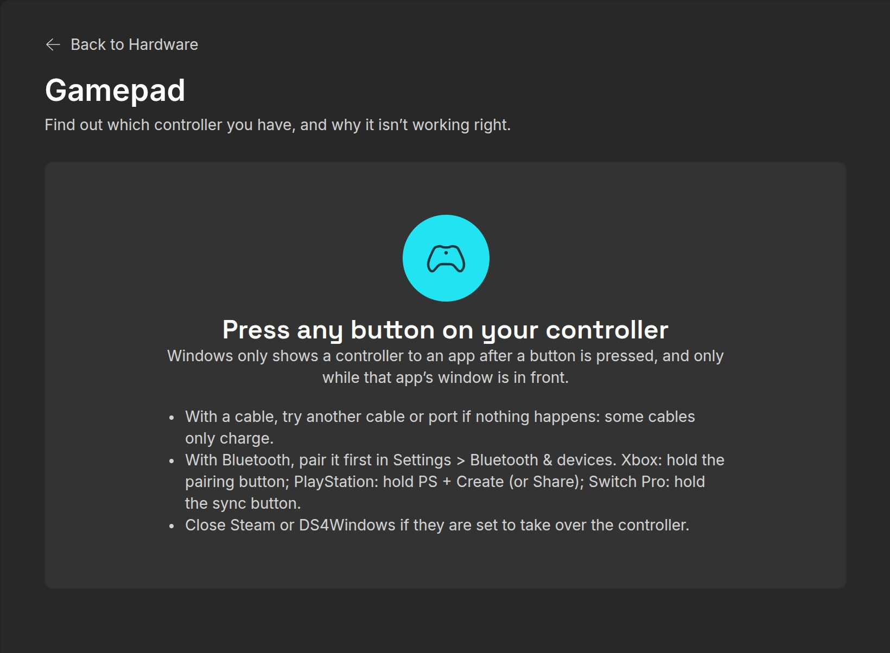

Keep your PC healthy.
WinDiag is a free app for Windows 10 and 11. It checks your PC in one click, tells you what it finds in plain words and helps you fix it.
Download for WindowsVersion 3.0.0 · 113 MB · Free and open source
Checkup
Your PC is fine, with 3 things worth a look.
5 good · 3 worth a look
- ProtectionMicrosoft Defender is on and up to date, and the firewall is on.
- Windows updates2 updates are waiting to be installed.Open Windows Update
- Drive healthYour main drive is healthy.
- Free space182 GB free of 476 GB on C:.
- BatteryIt holds 87 % of the charge it held when new.
- Startup apps9 apps start with Windows, which slows down startup.Manage startup apps
- ActivationWindows is activated.
- Last restartYour PC hasn’t restarted in 12 days. A restart finishes updates and frees up memory.
-
One app for the whole PC.
Everything WinDiag 3.0.0 does, one key each. Keep scrolling. - 8checks, each with a plain verdict
- Speed upStartup apps, free space, power mode
- PrivacyWhat Windows shares, switched in one place
- PersonalizeDark mode, taskbar, File Explorer
- 45trusted apps, installed with winget
- UpdatesWindows, drivers and BIOS
- SecurityAntivirus, firewall, encryption, TPM
- RepairThe fixes a technician tries first
- HardwareKeyboard, screen, sound, battery, gamepad
- 0 €No ads, no account, no trial
Press any key.
This is WinDiag’s keyboard test, right here. Every key you press shows up on the big key; in the app, the keys that never light up are the ones to fix.
0 of 27 keys tested
The real app.
When something is wrong, Repair has the safe fixes and Hardware tests each part of the PC, from the keys to the gamepad.





Nothing changes without you.
It asks first
WinDiag opens without administrator rights. Windows asks for your permission only when an action needs it, and drivers get a restore point first, so you can always go back.
Open, and only yours
Free and open source under the MIT licence. No account, no ads and no tracking: it only talks to Windows Update, winget and your PC maker’s site when you use them.
Questions.
Is it really free?
Yes. WinDiag is free and open source under the MIT licence. There is no trial, no paid version of these features, no ads and no account.
Which Windows does it need?
Windows 10 or Windows 11, 64-bit. Any brand of laptop or desktop.
Does it need administrator rights?
Not to open. When an action needs them, such as repairing system files or resetting the network, Windows asks you first. You can also restart WinDiag as administrator from the bottom of its menu.
Can it break something?
The Checkup only reads. Every setting WinDiag changes can be set back from the same page, drivers get a restore point first, and each repair explains when to use it before you press Run.
Why does Windows say “Windows protected your PC”?
The installer isn’t code-signed yet, so SmartScreen doesn’t know it. Choose More info, then Run anyway. The whole code is public on GitHub.
Can I use it without installing it?
Yes. Each release also has a portable zip: extract it anywhere, even a USB drive, and open windiag.exe.
Where do the apps it installs come from?
From winget, Windows’ own app installer, straight from each maker or the Microsoft Store. WinDiag only offers a fixed list of 45 well-known apps.
Check your PC today.
Version 3.0.0 · Windows 10 and 11, 64-bit · Installer or portable zip